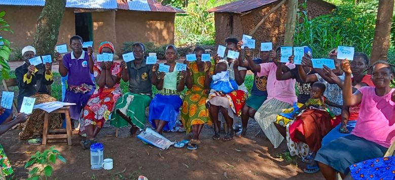
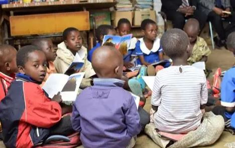
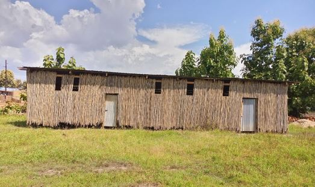

Featured Projects

Live Free Club in Schools
Establishing peer-led wellness clubs in secondary schools to create drug-free environments and develop student leaders.
300+ Students
10 Schools
Explore Project

Live Free Hub Development
Creating a model youth-friendly space with computer labs, recording studios, and training facilities for skill development.
Adjumani-Moyo Highway
In Progress
Learn More

Stakeholder Forums
Building collaborative networks with business leaders, religious figures, parents, and policymakers for systemic change.
6 Forum Types
Active
View Forums
Digital Content Campaign
Creating fun, educational content on social media to promote positive behavior and counter negative online influences.
Multi-Platform
Thousands Reached
View Content

Vocational Skills Program
Providing hands-on vocational and entrepreneurship training to enable young people to create their own opportunities.
8 Skills
50+ Trainees
See Opportunities
Mental Health Awareness
Campaigns to reduce stigma around mental health and provide support resources for youth struggling with addiction.
Community Focus
Ongoing
Explore Initiative